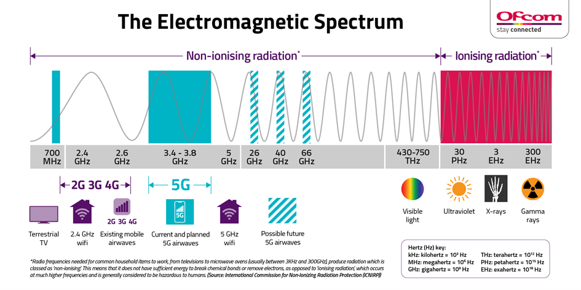

L'aspect santé
Intro
Un des aspects de la controverse sur la technologie de la 5G, est la santé. En effet, plusieurs rumeurs, parfois approfondies ou non par des études, circulent sur le fait que la 5G soit dangereuse pour la santé, voir même cancérigène. Nous nous concentrerons ici sur les risques que la 5G peut présenter sur notre santé, les études qui l’ont prouvé, ou bien les études qui prouvent le contraire.
Les ondes électromagnétiques au coeur du débat
Pour commencer, les ondes émises par le téléphones, les mêmes que la 5G, c’est à dire les ondes électromagnétiques, suscitent une inquiétude qui n’est pas nouvelle. En effet, depuis l’apparition des téléphones portables des questions se posent et des débats s’ouvrent sur ce sujet là. Depuis 2011, les champs électromagnétiques de radiofréquence sont classés comme « potentiellement cancérigènes pour l’homme » par le Centre International de Recherche sur le Cancer. De plus, pendant que le gouvernement français a débuté la mise aux enchères des fréquences destinées aux opérateurs téléphoniques, responsables du déploiement de la 5G dans le pays, l’agence nationale de sécurité sanitaire de l’alimentation, de l’environnement et du travail (ANSES), a rendu un rapport où elle se déclare « incapable » d’évaluer la dangerosité des ondes 5G. De ce fait, certains détracteurs de la 5G en profitent pour critiquer cette technologie, comme le prouvent les multiples manifestations d’opposants à la 5G. Parfois à raison, avec des arguments et des études fondées, mais quelquefois sans aucune preuve ni arguments valables. Les débats vis-à-vis du déploiement de la 5G sont donc très nombreux, en témoigneront les nombreuses contestations en justice, mais aussi très fournis avec des points de vue souvent très différents.
La 5G, une technologie néfaste pour le corps humain?
En effet, comme le précise l’Agence Nationale de Sécurité sur l’Enjeu Sanitaire, l’éventualité d’un déploiement de la technologie 5G en France met en évidence un cruel manque d’informations, voir même une absence de données relatives aux effets sanitaires. De ce fait, une vague de critiques quant à la 5G s’est déployée: bon nombre de personnes ont jugé dangereux son déploiement, dans le sens où les ondes électromagnétiques sont forcément perçues comme étant néfastes. De même, certains pays ou villes comme la Suisse avec d’ailleurs les villes de Genève ou Neuchâtel ont interdit le déploiement de la 5G tant que des études approfondies sur les ondes électromagnétiques n’étaient pas publiées. Selon certains scientifiques, les ondes 5G s’ajouteraient au flou sur les ondes 2G, 3G et 4G et provoqueraient des conséquences « désastreuses pour la santé ». En revanche, il faut faire attention aux articles et rapports qui peuvent paraitre sur le sujet de la technologie 5G et des dangers qu’elle représente. En effet, l’ANSES publie un rapport en 2013 dans lequel elle explique que « certains articles ne présentent pas les données scientifiques disponibles de manière équilibrée (…) » ou bien même que ces articles « reflètent les opinions ou convictions personnelles de leurs auteurs ».
Une guerre de chiffres et d'études
 En revanche, certaines études prouvent le contraire. En 2018, une étude a été menée sur plus de 4000 tumeurs cérébrales, et aucun lien entre ces tumeurs et l’exposition aux ondes électromagnétiques n’a été révélé. L’international Commission on Non-Ionizing Radiation Protection a mené une étude longue de 7 ans sur les fréquences émises par la 2G, 3G et 4G, ainsi que par la 5G. On peut voir les résultats sur le schéma ci-dessous, et on constate que les ondes émises par les ondes 2G, 3G et 4G sont comprises entre 2,4GHz et 2,6GHz. De plus, on remarque que les ondes 5G actuelles sont comprises entre 3,4GHz et 3,8GHz et pourraient aller dans le futur jusqu’à 66GHz. Soit, toujours en dessous de la zone des radiation ionisantes et dangereuses, commençant à partir de 30PHz. De plus, le chef de l’unité Agents Physiques, Olivier Merckel, nous explique que jusqu’à 10GHz, les ondes ne pénètrent pas sous la peau mais sont réfléchies par cette dernière, donc, non dangereuses. Enfin, le Centre International de Recherche sur le Cancer (Organisation Mondiale de la Santé), classe les ondes électromagnétiques comme « peut-être cancérogènes » dans le Groupe 2B. Au même titre que le plomb, le fioul, mais aussi l’Aloe Vera, qui peut paraitre plus surprenant et auquel les anti-5G ne comparent jamais ou très rarement les risques cancérogènes.
Conclusion:
Le sujet du déploiement de la 5G et de son utilité est très controversé sur l’aspect sanitaire, du fait du manques d’études quant aux ondes électromagnétiques émises par la 5G, mais aussi de la conviction de certains qu’il y a un seuil en dessous duquel les ondes ne sont pas dangereuses pour le corps humain. Yves Le Dréan, chercheur à l’institut de recherche en santé, environnement et travail, explique même en une phrase toute cette controverse sur l’aspect sanitaire: « De manière un peu schizophrène beaucoup de citoyens très connectés sont en même temps presque prêts à croire que les ondes de nos téléphones ou antennes sont mortelles ! ». Pour conclure, voici une vidéo du journal Le Monde expliquant en bref les dangers et les croyances populaires quant à la 5G. Vidéo Le Monde: La 5G est-elle dangereuse pour votre santé ? #LesDécodeurs